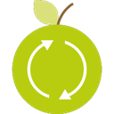

在线工具
共 297 个站点，按权重排序

TranslateLocally在本机跑翻译模型是真正的隐私保证，而不是政策承诺：文本从不离开你的设备，就不可能被记录或开采。Bergamot 引擎在它覆盖的语言上质量站得住，尤其欧洲语言对。短板是覆盖：模型库比云服务窄，经常在不那么通用的语言之间翻译，会遇到空缺。翻译敏感文档、不能接受文本离开自己机器的人，以及想要本地翻译 API 的隐私意识开发者，它是对的工具。
TranslateLocally在本机跑翻译模型是真正的隐私保证，而不是政策承诺：文本从不离开你的设备，就不可能被记录或开采。Bergamot 引擎在它覆盖的语言上质量站得住，尤其欧洲语言对。短板是覆盖：模型库比云服务窄，经常在不那么通用的语言之间翻译，会遇到空缺。翻译敏感文档、不能接受文本离开自己机器的人，以及想要本地翻译 API 的隐私意识开发者，它是对的工具。